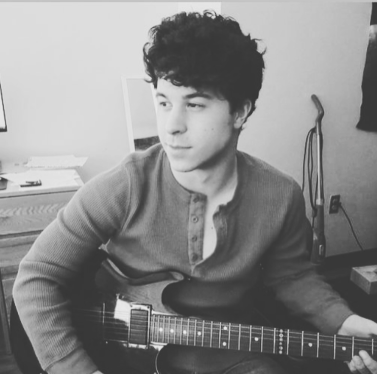

Hello! 😀
My name is Danny Donahue. I am from Acton, Massachusetts and I am a
senior at Babson College this year.
On campus, I am a finance and analytics tutor. I am also involved in a few organizations
including the Men's Varsity Swim & Dive Team, GIVE, and the Student Athletic Advisory Committee.

Post-graduation, I will be working at Dell Technologies as a Financial Analyst. At Dell, I am
doing a 2-year rotational program where I will work in 4 different roles (a new role every
6 months) within the finance department.
I like to stay active, it makes me feel healthy and it is a good way to relieve stress.
I make an effort to workout everyday. I'll rather go to the gym, go on a run, go swimmming,
or bike. It is one of my favorite ways to spend my free time, and it helps me start or end my day feeling good.
I also enjoy reading, and playing the guitar. I would also consider myself an extrovert, so I love spending time with
family and friends. I like to go into Boston and other surrounding areas to discover new things or new restaurants.
A big part of my life involves swimming. I have been swimming practically my whole life, but I really started swimming
competitively in high school. Here at Babson, I compete in the 200-yard butterfly. Swimming is a tough sport, but it is
great exercise and I enjoy swimming recreationally during the offseason to stay in shape.
During my sophomore year of college, we were all sent home due to COVID-19. I found myself in the monotonous routine of waking up, working out, going to class, and doing homework. After that, I would practicaly end my day. I think like everyone, I started to spend a lot of time watching YouTube videos.

One day, I was on YouTube and I came across a video of John Mayer and Keith Urban playing "Don't Let Me Down" and I was amazed. It led me to do a deeper dive into their other live performances and I decided it was something that I wanted to learn. I did some of my own research into teaching myself how to play. I also had very limited background in music - I played saxophone in the school band but quickly realized how different it was from learning guitar. But to my surprise, I found out that many great guitarists taught themselves how to play - including Keith Urban.
My uncle owned a guitar that had been in my basement for years. I looked up how to tune it, and I was all ready to go. The only problem was I had no idea where to start. The amount of information was quite overwhelming.
I found an app called "Yousician" where I learned the basic chords and how to strum, as well as some basic guitar theory. After I got the chords down, I was hooked. Soon I was learning full songs with a technique known as "fingerpicking" (you pick the indiviudal notes of a song). The purpose of this website is to create a general guide to teach yourself how to play, and it will hopefully streamline the process for those interested. I had many ups and downs, times my fingers hurt and I wanted to quit, etc. But I will say once you hit a certain point, you will begin to see connections and patterns between songs and creating music.
I will also like to make clear that I am no expert. In fact, I am still improving and learning songs every few weeks to every month - depending on the difficulty.